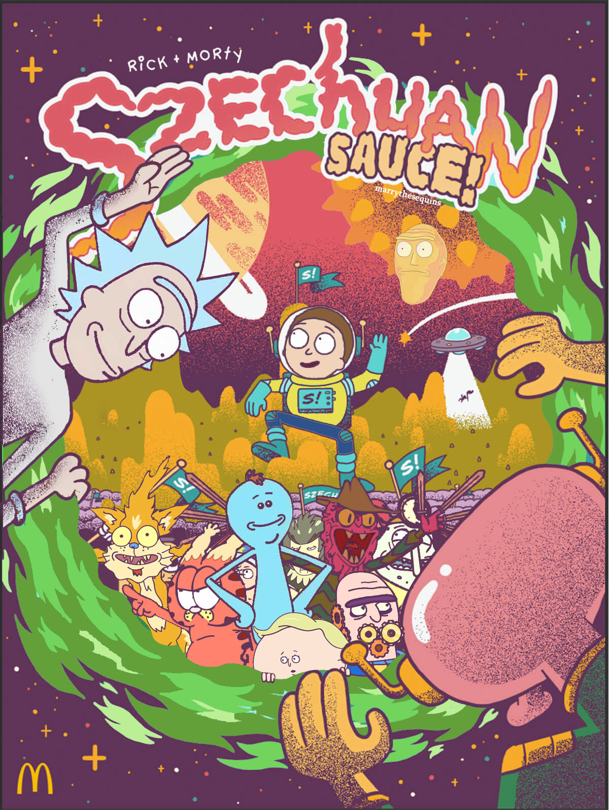

About Max Orenstein
Hi, thank you for visiting my website! A little background on myself, I'm a student at the University of Pennsylvania Annenberg School for Communications with minors in Data Analytics and Philosophy. I'm set to graduate in May 2025 with my bachelor's degree, after which I plan on pursuing my interests in data analytics, digital marketing, and e-commerce. My interest in these areas stems from a strong affinity for quantifiable business growth.
Story time: When I was a freshman in high school, I had a lucrative side hustle reselling Rick and Morty branded Szechuan Sauce. Due to the massive hype related to the show, I ended up doing pretty well, and this experience kickstarted my interest in marketing and business.

Professionally, I have work experience in digital marketing, sales, and research. I'm currently interning with DMI Partners, a performance marketing firm based in my native city of Philadelphia. Through this experience, I've gained valuable experience in email marketing, affiliate marketing, and marketing strategy, which has reinforced my interests. When I'm not busy, you can find me dominating the Philadelphia pickup soccer scene, crushing whoever I come across on Chess.com, and leading the Penn Cheese Club as President of Brie.
Check out the rest of my website! I have lots of cool portfolio projects and blog posts. I'm always looking for new opportunities to learn, share, and work. If you are a potential employer, collaborator, or interested in anything at all, you can reach me at maxo.philly@gmail.com.